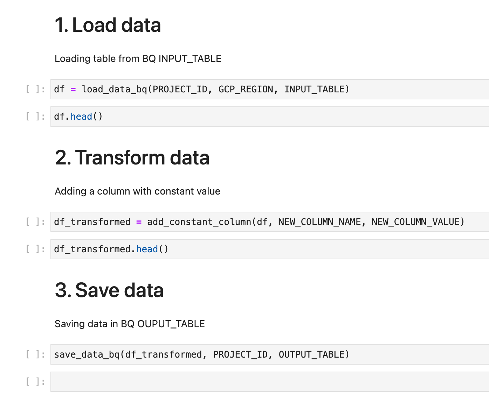

Vertex pipelines starter kit
This repository template is meant to help Vertex pipelines beginners understand and avoid its pitfalls. It illustrates what we find is the most efficient way to transition from notebook exploration to a reliable, industrialized ML pipeline.
It is based on the collective knowledge and feedbacks of past Artefact projects and people. It is meant to illustrate an architecture that provides both iteration/exploration speed, as well as reliability for industrialisation.
It also touches on patterns that we have seen not work well or had worse velocity and reliability in our experience.
Understanding the Vertex AI platform
Before we start, it is important to mention the difference between Vertex AI and Vertex AI Pipelines. Vertex AI is a set of services gathered in a unified platform to accelerate data science projects: Vertex AI Dataset, Vertex AI Pipelines, Vertex AI endpoints, etc... Vertex AI Pipelines is one of the service included in the Vertex AI platform.
Vertex pipelines
So, what are Vertex AI Pipelines?
Vertex AI Pipelines is a managed service offered by GCP to execute Kubeflow Pipelines.
If you separate all your machine learning workflow into “components” representing each steps of your ML workflow, then you can write your workflow using Kubeflow Pipelines SDK. In return, Kubeflow Pipeline makes your workflow portable and scalable.
Vertex AI Pipeline is a managed service to run your Kubeflow Pipelines.
Convictions
Kubeflow pipelines is a very powerful tool, but it is also very complex. On top of that you will be using it in a managed environment, which steepens the learning curve. To make developping vertex pipelines less painful, our main recommandation is to structure your code in a way that will allow you to work just like you would in a regular python project, and only use Vertex pipelines for orchestration and nothing else.
We want a strict eparation of concerns between the application code that does the data science, and the Vertex pipeline that will run it in an industrialized context.
On top of that, there are two big issues that we address with this starter kit:
- Vertex Pipelines have a high execution time overhead. Your code in a pipeline component will have an incompressible 2 minutes startup time to provision resources. While it does not look like a lot, it absolutely kills development velocity and cycle time. You can not iterate quickly with a 2 minutes overhead for each execution.
- Vertex Pipelines are very flexible and there are many ways to develop with them. Too many. Here we try to provide one way of working with the tool that reduces the pain of industrialisation while preserving iteration speed during the exploration, development, and evolution of your ML pipeline.
Here are our recommendation to avoid the problems above:
- Use a single base docker image for all components. This is the environement your code will run in when in a pipeline. Don't lose time creating a tailor-made one for each component. Save time by having the same image with all the required dependencies and use it everywhere.
- Only use function-based components. Container-based components are much harder to build, deploy, and maintain. Use the slimmest possible function-based components to reduce your operational load.
- Embark as little intelligence as possible in the components. Enforcing a strong separation of concerns between your business and orchestration logic will allow you handle these two functionalities separately, making debugging easier and faster.
- Have the business logic concentrated in a regular python folder/files structure. This will facilitate the separation of concerns, allow you to run your code locally, unit-test it easily, etc...
- This code should be locally executable. Essential to be able to quickly iterate on it.
Process for working with Vertex pipelines
Here we describe a workflow we have tested and recommend when using vertex pipelines.
An example of following this workflow is included in this repository
(final pipeline output is vertex/pipelines/my_first_pipeline.py )
Note that if you are not a fan of jupyter notebooks you can easily replace notebooks with scripts for a similar workflow
Phase 1 - Notebook exploration
- Do your usual notebook things, maybe start thinking about writing functions, but no pressure.
Phase 2 - Refactor your notebook for it to look like a pipeline
- Wrap code in functions to make them easily transferable to scripts
- Write your Notebook in a way that will mirror an ML pipeline: a section for a pipeline step/component, the notebook itself could represent the pipeline.
- When loading data from files, or tables to pandas dataframe, make sure to explicitly cast to the types that you will use (for cases which are ambiguous). Vertex has a way of loading data that may produce similar but different data types.
- Type hint functions inputs/outputs as a general good practice and to identify at a glance the vertex-compatible ones
Phase 3 - Move your code to libraries
- Migrate main and subfunctions to a
libfolder. - Those functions will be called both:
- In your notebook for iterating and testing new features
- By your vertex components for running the pipelines
- At this point your notebook should only include import, some config definition and application of your main functions.
- Have clear entrypoint functions to then use in components
- Maybe even write a few unit/integration tests
- Have a fully functional workflow before even thinking of moving to Vertex Pipelines
notebooks/vertex_pipelines/my_first_pipeline.ipynbgives an example of how do this for a simple ETL
Example of pipeline notebook for a simple ETL (each section is a component): 
Phase 4 - Wrap this code in components and pipelines
- Now we are finally doing some vertex !
- Write your function based components, you should only load / save your data (as this is vertex specific code) and import and call your top-level functions. Again, if you find yourself writing business or technical logic in the component, you should think about moving it to your
lib - Finally, you can compose your pipeline from the components that you defined.
- Run your pipeline, and hope for the best.
transform_data Component
@component(base_image=f'europe-west1-docker.pkg.dev/{os.getenv("PROJECT_ID")}/vertex-pipelines-docker/vertex-pipelines-base:latest')
def transform_data_component(
df: Input[Dataset],
column_name: str,
constant_value: str,
df_transformed_dataset: Output[Dataset]
):
import pandas as pd
from vertex.lib.processors.transform_data import add_constant_column
df = pd.read_csv(df.uri)
df_transformed = add_constant_column(df, column_name, constant_value)
df_transformed.to_csv(df_transformed_dataset.uri, index=False)
Phase 5 - Iterate and improve
You are probably going to need to go back to phase 1 to iterate and go through the motions again, from notebook to running pipeline. This is expected and normal. Doing it often will make you think end-to-end and allow you to close the feedback loop with users, thus limiting tunnel effect. It will also highlight potential integration risks within and around the pipeline early on. See: Walking skeleton approach.
It is a very good idea to keep maintaining the notebooks you used for creating a pipeline so that they can be used for quickly updating existing pipeline : modify your libs test in the notebook and once everything is working, test with vertex.